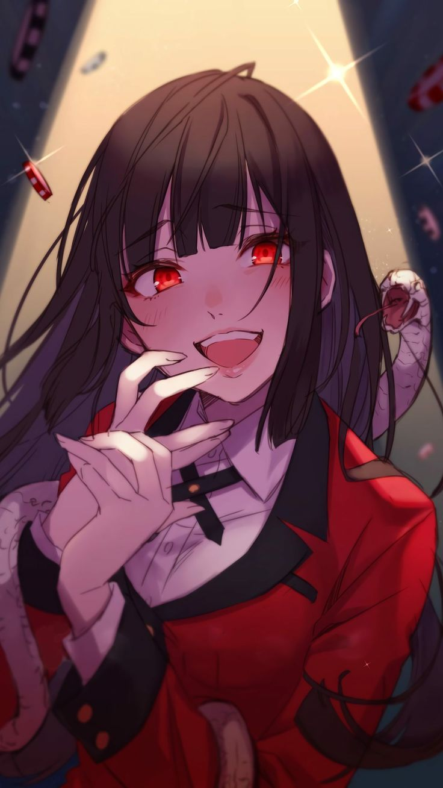

Yumeko Jabami
Yumeko Jabami, the protagonist of "Kakegurui – Compulsive Gambler," is a beautiful and intelligent student who thrives on high-stakes gambling. At Hyakkaou Private Academy, her daring and unpredictable style shakes up the school's hierarchy, as she seeks the thrill of risk over victory.